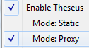

You usually want to use images, stylesheets (CSS), and JavaScript files on a web site, but you don't want to paste them all into app.js. Let's make it so that all the files in the public/ directory can be accessed through the Node.js server.
Add this line to app.js (after you define app, but before you call app.get).
app.use(express.static(__dirname + '/public'));
Kill and restart the web server, by pressing Ctrl+C in the terminal (possibly twice), then re-running node-theseus app.js. Instead of typing the command again, press Up to bring it back.
Visiting http://localhost:3000/images/falling.gif should now reveal a tragic image.
Now that the public/ directory is accessible through your server, let's use it to read the rest of the tutorial pages!
HACK! First, let's add a redirect. Brackets will try to open http://localhost:3000/public/tutorial-06.html by default instead of http://localhost:3000/tutorial-06.html, so let's redirect to the correct URL by adding this code to app.js:
app.get(/^\/public\/(.+)/, function (req, res) { res.redirect('/' + req.params[0]); });
Restart your Node.js server. This is your last reminder how: Ctrl+C, Up, Enter in the terminal.
Open Brackets' File menu and switch Theseus to Proxy mode so that it will act as a proxy to your server, instead of serving files directly from disk.

Open public/tutorial-07.html in Brackets. It should automatically open in this Chrome tab as well. If not, click the lightning bolt again.
A short guide to Connect Middleware. (connect is a library used by express as part of the web server.)